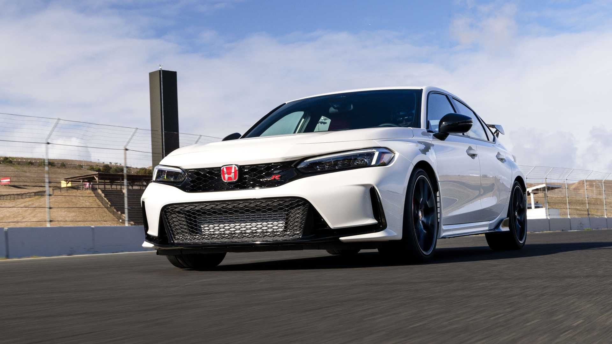

Lancamento do novo Honta Civic Type R 2023

Durante décadas, o Civic Type R foi fruta proibida para compradores americanos e brasileiros. Embora tenha estreado originalmente em 1997 na plataforma da sexta geração, chegou aos Estados Unidos apenas em 2017 e, ao Brasil, apenas por importadores independentes. De um lado, os entusiastas comemoraram, mas já não era mais um carro tão compacto como seus antecessores.
Design exterior polêmico à parte, ao volante ficou clara que a chegada do Type R valia a pena ser comemorada. A Honda não só tinha criado um esportivo admirável com potência, equilíbrio e conforto suficientes para assumir ser o melhor do segmento, como tinha um preço interessante. Era uma proposta verdadeiramente convincente para os que procuravam usabilidade nos dias de semana e emoção nos finais de semana, mas a aparência de carro de corrida exigia alguma ginástica mental para uma parte significativa das pessoas com poder de compra suficiente para realmente possuir um.
Sustentado pela plataforma do Civic de 11ª geração, o novo Type R abandona o controvérsio visual de seu predecessor para algo mais maduro, mas também traz consigo um preço de entrada mais adulto. Honda também fez uma série de ajustes sob a carroceria, mas remixar uma combinação que já funciona pode ser uma proposta complicada. Com isso em mente, eu me dirigi ao norte da Califórnia para colocar o esportivo nas estradas panorâmicas de Nappa Valley, bem como o exigente asfalto da pista de Sonoma Raceway.
Para continuar lendo clique aqui.